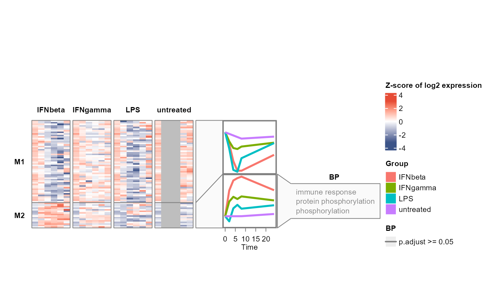
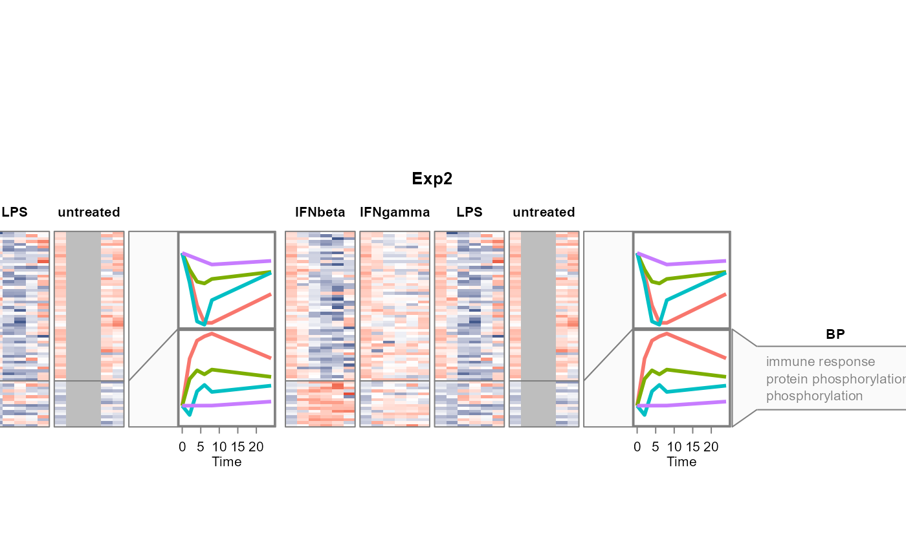

Plot WGCNA modules' heatmaps, mean expression profiles, and enrichment terms, aligned horizontally.
Different from running WGCNA, the input data should have the replicates merged, instead of having multiple samples per group, time and feature (gene).
If certain time points are missing in some groups, NA values are added.
Usage
plot_modules_h(
module,
se_obj_merged,
scale = TRUE,
assay,
ylabel = NULL,
profile_width = 3,
profile_link_width = 1,
enrich_list = NULL,
enrich_category = NULL,
enrich_rank_by = "p.adjust",
enrich_top_n = 3,
enrich_threshold = 0.05,
enrich_wrap_width = NULL,
fontsize = 8,
group_annotation = c("name", "colour", "both", "none"),
return_legends = FALSE,
profile_scale = c("dataset", "shared", "free"),
heatmap_width = 8,
heatmap_height = 8,
mark_features = NULL,
width = 16,
height = 12,
res = 300,
suffix = "",
device = "png",
save = NULL,
names = NULL,
selected_modules = NULL,
legend_position = c("right", "bottom"),
feature_colours = NULL
)Arguments
- module
A data frame with columns "Feature" and "Module"
- se_obj_merged
A SummarizedExperiment object, with one value for each feature at each time point in each group (replicates merged), or a named list of such objects (one per dataset). The colData of each object should contain columns "Sample", "Group", and "Time". The object can be produced by
split_groups(),merge_replicates()andmerge_groups().- scale
Whether to scale the data (z-score) across samples for each feature (default is TRUE)
- assay
The assay to use in the SummarizedExperiment object: a numeric index or character name, e.g. 1 or "orig" for original data, 2 or "norm" for time 0 normalised data. (Required, no default.)
- ylabel
Y axis label. A single character string shared by all datasets. Default: NULL, i.e. "Z-score of log2 abundance" when scale = TRUE, "Log2 abundance" otherwise.
- profile_width
Width of the mean expression profile panels in cm (default: 3)
- profile_link_width
Width of the link between heatmap and mean expression profile panels in cm (default: 1)
- enrich_list
A named enrichment list for modules, as produced by
enrichGO_list()$all. Each named element should be a data.frame with columnsCluster,Description, and the rank column. Accepts any enrichment result with compatible format. Whenenrich_categoryis a vector, each category is shown as a separate column in the annotation textbox. If NULL (default), no enrichment terms will be displayed.- enrich_category
Category name(s) of enrichment to display: a single string (e.g.
"BP"), or a vector for multiple categories (e.g.c("BP", "CC", "Features")). When"Features"is included,mark_featuresare shown as a column in the textbox. Categories must be present inenrich_list, except for"Features".- enrich_rank_by
Numeric column used to rank enrichment terms within each module. A single string (default:
"p.adjust") is recycled for all categories inenrich_category. Supply a character vector of matching length for per-category control. Also used for colour-coding: terms with values belowenrich_thresholdare shown in black, terms above in grey.- enrich_top_n
Top N enrichment terms per module. A single integer (default: 3) is recycled for all categories in
enrich_category. Supply an integer vector of matching length for per-category control.- enrich_threshold
Threshold for colour-coding enrichment terms (default: 0.05). Terms where
enrich_rank_bycolumn value falls below this threshold are drawn in black, terms above in grey. Supply a vector matchingenrich_categoryfor per-category control, or set toNULLto skip colour-coding (all terms black). Set toNAfor"Features".- enrich_wrap_width
Optional maximum enrichment term width in cm. The default
NULLdisables wrapping.- fontsize
Base font size (default: 8)
- group_annotation
Top annotation for group-split heatmap columns:
"name"(default),"colour","both", or"none". In"both"mode, group names are above the colour strip.- return_legends
Logical; if
TRUE, return a list containing the Heatmap/HeatmapList and the native ComplexHeatmap legend objects. (default:FALSE)- profile_scale
Y-axis scaling for the mean expression profiles:
"dataset"(default) uses one range across modules within each dataset,"shared"uses one range across all modules and datasets, and"free"uses an independent range for each module.- heatmap_width
Width of the heatmap body in cm (default: 8)
- heatmap_height
Height of the heatmap body in cm (default: 8). Set to
NULLto auto-size.- mark_features
Features to label. Accepts three forms:
A character vector: all marked in black by default on the left.
A named list of character vectors, e.g.
list("Set 1" = c("gene1"), "Set 2" = c("gene2")). Names become categories with auto-assigned colours (viaggsci::pal_jco()).A data frame with
FeatureandSetcolumns, such as the output ofextract_consensus_hubs().Setvalues become categories. Auto-routed: shown asanno_mark(left side, connecting lines) unless"Features"is present inenrich_category, in which case ananno_multicol_textbox(right side) is built instead, using the same colours. Set toNULL(default) to skip marking.
- width
Width of the saved image (default is 16 (cm))
- height
Height of the saved image (default is 12 (cm))
- res
Resolution of the saved image (except pdf and svg formats) (default: 300 (ppi))
- suffix
Suffix for the saved image file name (default: "")
- device
Image file format(s) for saving. Can be a character vector with one or more of
"png","pdf","svg","tiff","jpeg"(default:"png")- save
Directory to save the plot, no saving if is NULL (default is NULL)
- names
Optional character vector of dataset names for the plot subtitles when multi-dataset. Default: NULL, i.e. the names of
se_obj_merged.- selected_modules
Optional character or numeric module labels for which profiles and enrichment panels should be displayed. The default
NULLkeeps all modules.- legend_position
Legend position:
"right"(default) or"bottom".- feature_colours
Optional named character vector of colours for marked feature sets. Names must match feature set names in
mark_features. Ifmark_featuresis a plain character vector, this parameter is ignored. Omitted sets retain their automatic colours. Default:NULL.
Value
A combined plot of heatmap, mean expression profile, and enrichment
terms for each WGCNA module. If return_legends = TRUE, returns a list with
elements heatmap and legends instead.
Examples
data(example_obj)
example_obj <- normalise_to_start(example_obj)
#> Normalising to group baseline at each feature's first non-NA time point.
example_obj_list <- split_groups(example_obj)
example_obj_merged_list <- merge_replicates(example_obj_list)
example_obj_merged <- merge_groups(example_obj_merged_list)
data(example_net)
# select two modules for demonstration
example_module <- WGCNA_module(example_net) |>
dplyr::filter(Module %in% c("1", "2"))
data(example_go)
plot_modules_h(example_module |> dplyr::filter(Module != '0'),
example_obj_merged, assay = 2, scale = TRUE,
ylabel = "Z-score of log2 expression",
enrich_list = example_go$all,
enrich_category = "BP",
heatmap_width = 6, heatmap_height = 4)

plot_modules_h(example_module |> dplyr::filter(Module != '0'),
list(Exp1 = example_obj_merged, Exp2 = example_obj_merged),
assay = 2, scale = TRUE,
enrich_list = example_go$all,
enrich_category = "BP",
heatmap_width = 6, heatmap_height = 4)
